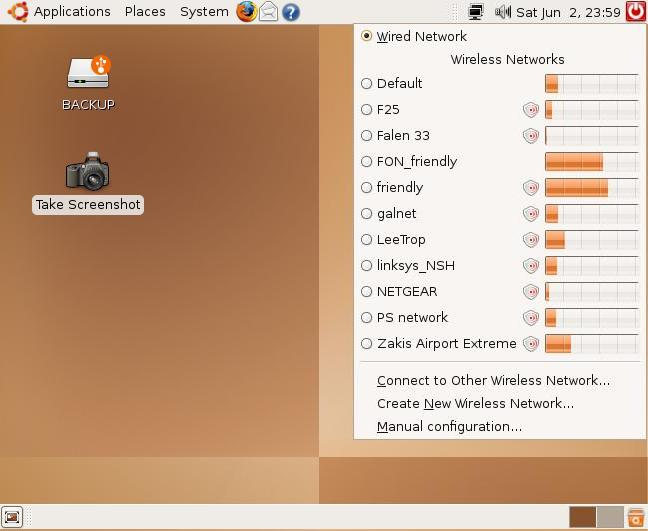
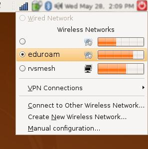
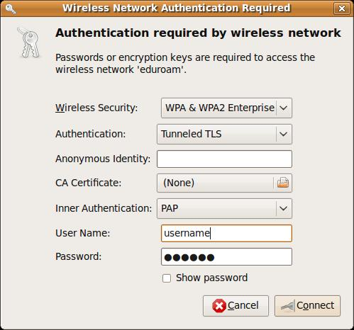
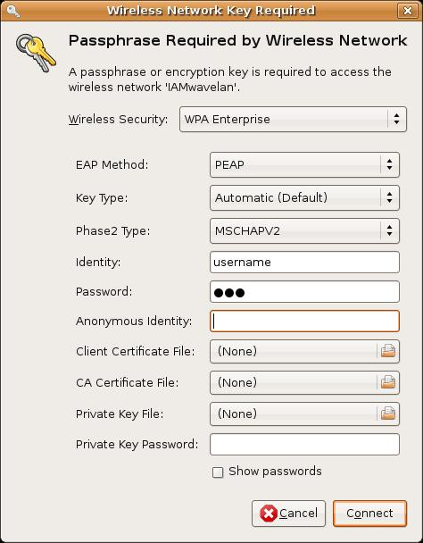
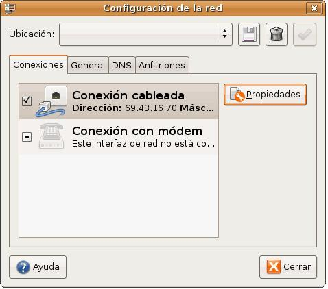

Ubuntu WLAN
1.Recordar antes tener habilitado la red inalambrica dando click sobre las dos pantallas no dira si esta habilitado o no.
2.Clickear en el icono “2 ordenadores” superior derecho del panel

3.Si todo funciona bien veremos las redes por ejemplo eudora.

4.Ahora nos pide informacion de la red en esta pantalla (Recordar que WPA con LINUX no va)

o en esta otra pantalla parecida

despues de esto aprecera un icono circular “obtener direccion de red”..........
luego un icono escalera en azul “se conecto ok”

para forzar placa de red es facil.
Vete a Sistema \ Administración \ Red. En la ventana que se abre selecciona Conexión cableada (es lo normal si no tienes un módem de los de antes) y pulsa sobre el botón Propiedades que tienes a la derecha.
Escribe, después de desmarcar Habilitar el modo itinerante, la dirección IP de tu equipo, la máscara de subred y la puerta de enlace predeterminada.
Activa la pestaña DNS y añade sucesivamente las dos direcciones que corresponden con tu conexión al servidor de Internet.
Cierra la ventana con los datos introducidos.
NOTA: Si posees una conexión DHCP no tendrás que escribir dichos datos.
Pero no basta con lo anterior, debes realizar un último paso.
Vete a Aplicaciones \ Accesorios \ Terminal.
Escribe la siguiente instrucción en al línea de comandos y pulsa sobre la tecla :
sudo /etc/init.d/networking restart
Sal del Terminal.
Volver a Inicio